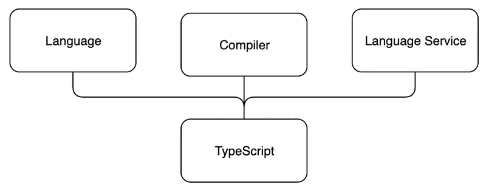

الخلفية والمقدمة
TypeScript هي لغة برمجة صُمّمت لتطوير JavaScript على نطاق واسع، ابتكرتها Microsoft. على سبيل المثال، كُتب كلٌّ من Azure Management Portal التابع لـ Microsoft (1.2 مليون سطر من الشيفرة) وVisual Studio Code (300 000 سطر من الشيفرة) بلغة TypeScript. ولدعم بناء تطبيقات JavaScript واسعة النطاق، تقدّم TypeScript ميزات مثل أدوات تطوير أفضل أثناء التطوير، وتحليل ساكن للشيفرة، وفحص للأنواع وقت الترجمة، وتوثيق على مستوى الشيفرة.
المبدأ الأساسي
TypeScript هي مجموعة شاملة مُنمّطة (typed superset) من JavaScript، وتُترجم في النهاية إلى شيفرة JavaScript عادية. بل يستطيع المبرمج أن يحدّد نسخة الشيفرة الناتجة، بشرط أن تكون ECMAScript 3 أو أحدث. وكون TypeScript مجموعة شاملة من JavaScript يعني أنها تتضمن كل ميزات JavaScript وميزاتها الإضافية أيضاً. بعبارة أخرى، كل شيفرة JavaScript الموجودة هي TypeScript صالحة.
تتكوّن TypeScript من ثلاثة أجزاء منفصلة، لكن يكمل بعضها بعضاً:
- اللغة
- المترجم
- خدمة اللغة

تتكوّن اللغة من الصياغة (syntax) والكلمات المفتاحية وتوصيفات الأنواع. والصياغة مشابهة لصياغة JavaScript لكنها ليست هي نفسها. ومن بين الأجزاء الثلاثة لـ TypeScript، يكون احتكاك المبرمجين باللغة هو الأكثر مباشرة.
يتولّى المترجم مسؤولية محو معلومات الأنواع (أي إزالة معلومات التنميط) وتحويلات الشيفرة. وتمكّن تحويلات الشيفرة من ترجمة شيفرة TypeScript بينياً إلى JavaScript قابلة للتنفيذ. ويُزال كل ما يتعلق بالأنواع وقت الترجمة، لذا ليست TypeScript شيفرة مُنمّطة ساكناً بالمعنى الحقيقي.
تقليدياً، تعني الترجمة (compiling) أن تُحوَّل الشيفرة من صيغة يقرأها الإنسان إلى صيغة تقرأها الآلة. وفي TypeScript، تُحوَّل الشيفرة المصدرية التي يقرأها الإنسان إلى شيفرة مصدرية أخرى يقرأها الإنسان، لذا فالمصطلح الأدق هو الترجمة البينية (transpiling). غير أن compiling هو المصطلح الأكثر استخداماً في هذا السياق، لذا سنستمر في استخدامه.
ويجري المترجم أيضاً تحليلاً ساكناً للشيفرة. ويمكنه إصدار تحذيرات أو أخطاء إذا وجد سبباً لذلك، ويمكن ضبطه لأداء مهام إضافية مثل دمج الشيفرة الناتجة في ملف واحد.
تجمع خدمة اللغة معلومات الأنواع من الشيفرة المصدرية. ويمكن لأدوات التطوير استخدام معلومات الأنواع لتقديم الإكمال التلقائي (intellisense)، وتلميحات الأنواع، وبدائل إعادة الهيكلة الممكنة.
الميزات اللغوية الرئيسية في TypeScript
في هذا القسم، سنصف بعض الميزات الرئيسية للغة TypeScript. والهدف هو أن نمنحك فهماً أساسياً للميزات الرئيسية في TypeScript لمساعدتك على فهم المزيد مما سيأتي خلال هذه الدورة.
توصيفات الأنواع
توصيفات الأنواع في TypeScript طريقة خفيفة لتسجيل العقد المقصود لدالة أو متغير. في المثال أدناه، عرّفنا دالة birthdayGreeter تقبل وسيطين: أحدهما من نوع string والآخر من نوع number. وستعيد الدالة نصاً.
const birthdayGreeter = (name: string, age: number): string => {
return `Happy birthday ${name}, you are now ${age} years old!`;
};
const birthdayHero = "Jane User";
const age = 22;
console.log(birthdayGreeter(birthdayHero, age));
الكلمات المفتاحية
الكلمات المفتاحية في TypeScript كلمات محجوزة خصيصاً تحمل معنى غائياً محدّداً داخل بنية اللغة. ولا يمكن استخدامها كمعرّفات (أسماء متغيرات أو دوال أو أصناف، إلخ) لأنها جزء من صياغة اللغة. ومحاولة استخدام هذه الكلمات المفتاحية ستؤدي إلى خطأ في الصياغة أو في الدلالة. وهناك نحو 40-50 كلمة مفتاحية في TypeScript. ومن هذه الكلمات: type وenum وinterface وvoid وnull وinstanceof إلخ. ومن الجدير بالملاحظة أن TypeScript ترث كل الكلمات المحجوزة من JavaScript، وتضيف إليها بعض الكلمات المفتاحية الخاصة بها والمتعلقة بالأنواع مثل interface وtype وenum إلخ.
التنميط البنيوي
TypeScript لغة مُنمّطة بنيوياً. في التنميط البنيوي، يُعتبر عنصران متوافقين مع بعضهما إذا كان لكل خصيصة ضمن نوع العنصر الأول خصيصة مقابلة ومطابقة موجودة ضمن نوع العنصر الثاني. ويُعتبر نوعان متطابقين إذا كانا متوافقين مع بعضهما.
استنتاج الأنواع
يستطيع مترجم TypeScript أن يحاول استنتاج معلومات الأنواع إذا لم يُحدَّد أي نوع. ويمكن استنتاج أنواع المتغيرات بناءً على القيمة المُسنَدة إليها واستخدامها. ويحدث استنتاج الأنواع عند تهيئة المتغيرات والأعضاء، وضبط القيم الافتراضية للمعاملات، وتحديد أنواع القيم المعادة من الدوال.
على سبيل المثال، تأمّل الدالة add:
const add = (a: number, b: number) => {
/* تُستخدم القيمة المُعادة لتحديد
نوع الإرجاع للدالة */
return a + b;
}
يُستنتج نوع القيمة المعادة للدالة بتتبّع الشيفرة رجوعاً إلى تعبير الإرجاع. ويجري تعبير الإرجاع عملية جمع للمعاملين a وb. ويمكننا أن نرى أن a وb عددان بناءً على نوعيهما. وهكذا نستنتج أن القيمة المعادة من النوع number.
محو الأنواع
تزيل TypeScript كل بنى نظام الأنواع أثناء الترجمة.
المدخل:
let x: SomeType;
المخرج:
let x;
وهذا يعني أنه لا تبقى أي معلومات عن الأنواع وقت التشغيل؛ فلا شيء يقول إن المتغير x قد أُعلن من النوع SomeType.
قد يكون غياب معلومات الأنواع وقت التشغيل مفاجئاً للمبرمجين المعتادين على الاستخدام المكثّف للانعكاس (reflection) أو أنظمة البيانات الوصفية الأخرى.
لماذا ينبغي استخدام TypeScript؟
في المنتديات المختلفة، قد تصادف الكثير من الحجج المختلفة سواء لصالح TypeScript أو ضدها. والحقيقة على الأرجح غامضة إلى هذا الحد؛ فهي تعتمد على احتياجاتك وعلى استخدام الوظائف التي تقدّمها TypeScript. على أي حال، إليك بعض أسبابنا التي نرى بها أن لاستخدام TypeScript بعض المزايا.
أولاً، تقدّم TypeScript فحص الأنواع والتحليل الساكن للشيفرة. يمكننا أن نشترط أن تكون القيم من نوع معيّن وأن ينبّهنا المترجم عند استخدامها بشكل خاطئ. وهذا قد يقلّل أخطاء وقت التشغيل، بل قد تتمكن حتى من تقليل عدد اختبارات الوحدة المطلوبة في مشروع، على الأقل بالنسبة للاختبارات المتعلقة بالأنواع فقط. ولا يقتصر التحليل الساكن للشيفرة على التنبيه إلى الاستخدام الخاطئ للأنواع، بل ينبّه أيضاً إلى أخطاء أخرى مثل الخطأ في كتابة اسم متغير أو دالة، أو محاولة استخدام متغير خارج نطاقه.
الميزة الثانية لـ TypeScript هي أن توصيفات الأنواع في الشيفرة يمكن أن تعمل كنوع من التوثيق على مستوى الشيفرة. فمن السهل أن تعرف من توقيع الدالة (function signature) نوع الوسائط التي يمكن للدالة أن تستهلكها وما نوع البيانات التي ستعيدها. وهذا الشكل من التوثيق المرتبط بتوصيفات الأنواع سيكون دائماً محدّثاً، ويسهّل على المبرمجين الجدد البدء في العمل على مشروع موجود. وهو مفيد أيضاً عند العودة للعمل على مشروع قديم.
ويمكن إعادة استخدام الأنواع في كل أنحاء قاعدة الشيفرة، وسينعكس أي تغيير في تعريف نوع تلقائياً في كل مكان يُستخدم فيه هذا النوع. وقد يجادل أحدهم بأنه يمكن تحقيق توثيق مشابه على مستوى الشيفرة باستخدام مثلاً JSDoc، لكنه ليس مرتبطاً بالشيفرة بإحكام كما هي أنواع TypeScript، وقد يخرج عن التزامن بسهولة أكبر، وهو أيضاً أكثر إسهاباً.
الميزة الثالثة لـ TypeScript هي أن بيئات التطوير المتكاملة (IDEs) يمكنها تقديم إكمال تلقائي أكثر تحديداً وذكاءً (IntelliSense) عندما تعرف بالضبط أنواع البيانات التي تعالجها.
كل هذه الميزات مفيدة للغاية عندما تحتاج إلى إعادة هيكلة شيفرتك. فالتحليل الساكن للشيفرة ينبّهك إلى أي أخطاء في شيفرتك، ويمكن أن يمنحك IntelliSense تلميحات حول الخصائص المتاحة وحتى خيارات إعادة الهيكلة الممكنة. ويساعدك التوثيق على مستوى الشيفرة على فهم الشيفرة الموجودة. وبضبط إعداداته، تسهّل TypeScript تبنّي أحدث ميزات JavaScript مبكراً.
ما الذي لا تصلحه TypeScript؟
كما ذُكر أعلاه، فإن توصيفات الأنواع وفحص الأنواع في TypeScript توجد فقط وقت الترجمة ولا توجد بعد ذلك وقت التشغيل. وحتى إذا لم يُطلق المترجم أي أخطاء، فما زالت أخطاء وقت التشغيل ممكنة. وهذه الأخطاء وقت التشغيل شائعة بشكل خاص عند التعامل مع مدخلات خارجية، مثل البيانات الواردة من طلب عبر الشبكة.
وأخيراً، نسرد أدناه بعض المشكلات التي يجدها كثيرون مع TypeScript، وقد يكون من الجيد أن تكون على دراية بها:
أنواع ناقصة أو غير صالحة أو مفقودة في المكتبات الخارجية
عند استخدام مكتبات خارجية، قد تجد أن بعضها لديه تعريفات أنواع مفقودة أو غير صالحة بطريقة ما. وفي أغلب الأحيان، يعود السبب إلى أن المكتبة لم تُكتب بـ TypeScript، وأن الشخص الذي أضاف تعريفات الأنواع يدوياً لم يقم بالمهمة على نحو جيد. في هذه الحالات، قد تحتاج إلى تعريف الأنواع بنفسك. ومع ذلك، هناك احتمال كبير أن يكون أحدهم قد أضاف بالفعل تعريفات الأنواع للحزمة التي تستخدمها. تحقق دائماً أولاً من صفحة GitHub الخاصة بـ DefinitelyTyped. فهي على الأرجح المصدر الأكثر شهرة لملفات تعريف الأنواع. وإلا، فقد ترغب في البدء بالتعرّف على توثيق TypeScript المتعلق بتعريفات الأنواع.
أحياناً يحتاج استنتاج الأنواع إلى مساعدة
استنتاج الأنواع في TypeScript جيد جداً، لكنه ليس مثالياً تماماً. أحياناً تبدو أنواعك صحيحة، ومع ذلك يشتكي المترجم من أن خاصية غير موجودة أو أن استخداماً غير مسموح به. في هذه الحالات، قد تحتاج إلى إرشاد المترجم بفحص إضافي. لكن كن حذراً: فتأكيدات الأنواع (casts) وحرّاس الأنواع (type guards) لا تضيف أماناً فحسب، بل يمكن أن تعمل أيضاً كتلميحات قسرية. فعندما تستخدمها، فأنت تقول للمترجم فعلياً: «ثق بي، هذه القيمة من هذا النوع»، وتتحمّل المسؤولية إذا كان هذا الافتراض خاطئاً.
أخطاء أنواع غامضة
قد يكون من الصعب جداً أحياناً فهم الأخطاء التي يعطيها نظام الأنواع، خاصة إذا كنت تستخدم أنواعاً معقدة. وكقاعدة عامة، تحتوي رسائل أخطاء TypeScript على المعلومات الأكثر فائدة في نهاية الرسالة. وعند مصادفة رسائل طويلة ومربكة، ابدأ بقراءتها من النهاية.